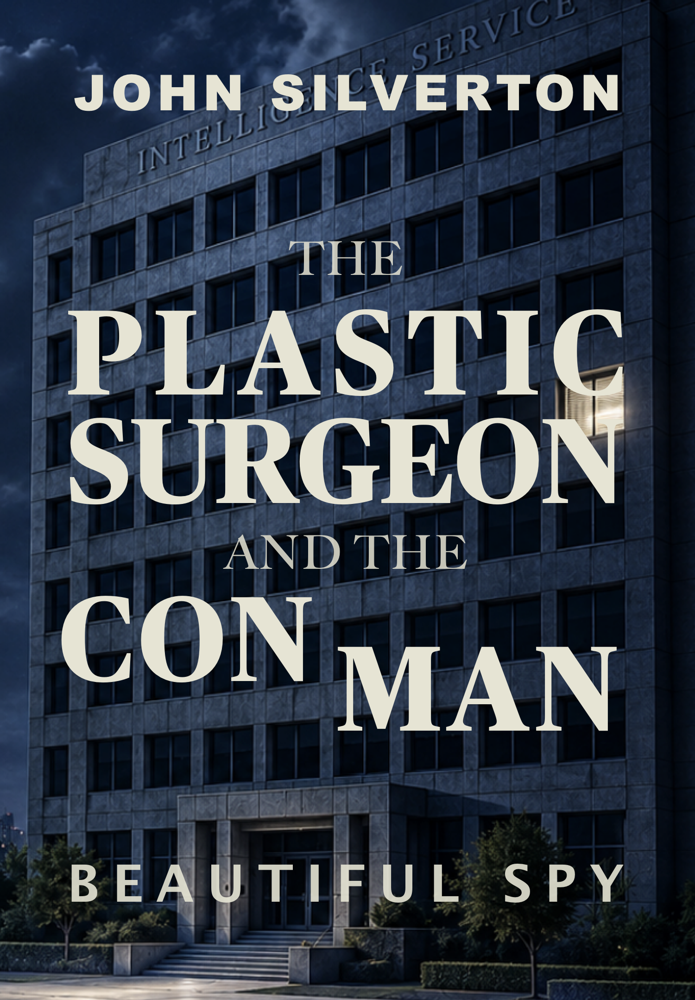

A senator. A spy. A mysterious death. A deception designed to stop a war.
Emily Chan arrives in the United States with a simple assignment: gather intelligence from the inner workings of American power. Working quietly inside a senator’s office, she passes information to handlers who believe they are controlling her.
But Emily is playing a far more dangerous game. As rival intelligence services begin to circle and suspicion grows, she realizes that the information she is being asked to deliver could help trigger a conflict across the Taiwan Strait. Instead of retreating, Emily makes a decision that could cost her life: she will manipulate the intelligence itself.
Piece by piece, report by report, she constructs a carefully crafted illusion — a regional coalition forming to defend Taiwan. If Beijing believes it, the invasion plans may be delayed. If they discover the deception, she will disappear.
In the quiet rooms of Washington and behind the sealed doors of foreign embassies, a hidden war of information unfolds. Alliances shift. Motives remain uncertain. And the fate of millions may depend on whether one woman can keep the illusion alive long enough. Because sometimes victory is not winning. Sometimes it is simply buying time.
The Con Man gets plastic surgery for his girlfriend who steals drone classified material.

An unknown child claims he is Jack's lost half brother.